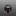

已丟棄的酒精爐
將一些做太失敗已經丟棄的酒精爐移駕至此。
索引
ALOCS愛路客酒精爐 (仿Trangia) #雙層加壓 網路購買
原本Trangia的設計就有點黃火了，這款燃燒效率也沒手工酒精爐好，也比小島爐耗費能源，就算不用它的爐架，本體還是不輕，沒有什麼特別的優勢。
網路上分析是因為雙層上緣蓋住的地方有縫隙，導致從孔洞噴出的酒精蒸氣壓力不夠，以至於燃燒效果不好。


當然這款效率還不是最差的，還有更便宜的燒起來效率都沒DIY的好的。
硬幣酒精爐(外側開孔＆內開孔加高爐壁) #封閉加壓 DIY 危險
YouTube搜尋Penny Stove有很多製作教學與燃燒影片。
中間小孔是洩壓孔，需要放置一塊錢壓住，使爐子維持高壓，達到小孔噴發的效果。
缺點是需要等待預熱，尤其爐體太高太大的狀況下，若氣溫冷，空氣缺氧都可能點失敗。且爐子壓力較大，若失敗後嘗試重新點燃，可能因為酒精蒸氣燃燒膨脹瞬間爆炸，使酒精液體噴發，是一款較危險需小心操作的酒精爐。


沙士鋁罐酒精爐 (外打孔內毛細失敗品) #雙層毛細 DIY
嘗試用沙士罐製作毛細酒精爐，外罐酒精盤，內罐外打燃燒孔，內層再額外疊一圈毛細層。
工具不妥，沒認真量高度，擠壓後毛細通道扭曲，燃燒效率又差，加墊棉布進去沒差太多，一整個又醜，就丟了。

魔爪仿貓罐酒精爐 (爐小空氣流通差效率不佳) #開放式 DIY
嘗試用魔爪罐製作貓罐酒精爐，此款設計可不用爐架，鍋子直接疊上去也可燃燒，但爐體小，空氣流通慢，預熱時間長，馬上疊爐子很容易熄火。
嘗試放入一圈鋁圈改善預熱速度，卻容易讓酒精小小亂噴有點危險。後來改用大一點的罐頭製作後此款就丟棄了。

雪碧仿貓罐酒精爐 (失敗品) #開放式 DIY 危險
嘗試用雙層結構打孔製作貓罐酒精爐，不妥當的雙層加打孔設計，導致酒精蒸氣在縫隙中流竄，點燃後火焰不穩，酒精容易亂噴，非常危險！！

IonStove #開放式 重量11g DIY
純粹的中心打孔與外層通氣孔，實際燃燒時意外的可以燒非常非常久，但火焰偏小，也因此煮水幾乎只能小滾或不太滾，實驗使用鍋子與燒異丙醇的狀況下，改用更小的爐架與杯子燒乙醇也許會有差異。
此類設計理論燃燒孔應該還是以中間為主，周圍的孔只是幫助進氣而已。所以中間開孔越小，火焰應該就越小，且更不容易點燃。
中心開孔為3cm：

參考此網頁製作教學製作而成：https://hikinghq.net/ionstove/build.htm
IonStove Remake (失敗品) DIY
嘗試重新依造上述網頁製作尺寸，並且改由波蜜鐵罐製作，這樣就有兩個平底。改用原設計燃燒效率比雪碧鋁罐還差，25ml異丙醇竟然燒了四十多分鐘。
後為了嘗試改善進氣，開始在周邊也打孔，但效果更糟了，火焰會以一種脈衝波的形式瞬間噴發、減小、噴發、減小。甚至嘗試周圍底部留空隙，也無法改善，真的是不能隨便亂打孔。
打了外層進氣孔後的模樣，已跟當初設計不同；中心開孔為一吋(2.58cm)

若捲了鋁圈放在中間，變雙層結構，燃燒效率會稍微變好，但火還是很小，且就離原本IonStove的設計越來越遠。
不知道網頁上的爐子設計為何可以正常運作，而且網頁上寫是鈦製，但鈦的導熱性也沒鋁好，而這次選擇的鐵罐是最差的，所以酒精爐的選擇上，材質也許也有影響；也或許有些設計沒有在網路上廣泛流傳的原因，是本身就非常難重現效果，某些眉角原作者沒提到之類的。
螺絲酒精爐 (失敗品) #封閉加壓 重量27g DIY
硬幣酒精爐(外側開孔＆內開孔加高爐壁)的變體，嘗試使用螺絲深入到酒精內加熱，加速預熱的作法。
不料不僅螺絲密封性差，酒精提早流進洞中，使得上層沒辦法作為預熱燃燒，需要額外的預熱盤先在外圍灑酒精點燃（但底部預熱盤比較安全沒錯）。
且一旦點燃後，鏍絲又加速內部快速蒸發導致一開始火焰過大，後面又瞬間過小，形成如芥末般，嗆一下就沒了的窘境！整個比硬幣酒精爐還廢！
看似合理的的設計，實則因為細節處理的差異，反而造成反效果！螺絲螺母還徒增重量！
網路上類似的封閉式爐體，其實應該是螺絲螺母要鎖緊或塗膠讓他不要產生空隙，並寫在側邊額外打個鎖孔可以填充酒精，而非直接沿用硬幣酒精爐讓他流進去的作法。
並且爐體小的狀況下其實應該也不需要螺絲加速預熱了，以避免酒精過度蒸發的問題。


波蜜鐵罐酒精爐 #開放式 重量38g DIY
類似貓罐酒精爐的增高版，直接將上下打兩排孔，上部留2~3cm燃燒空間，且需要在最頂部靠近鍋面處留幾個小排氣孔，避免酒精蒸氣累積在上半部一瞬間燃爆，底部留2cm高度存放酒精（50ml內應該沒問題），並且下半部孔洞預留點火孔空間，適合的高度可兼當爐架。
用95%乙醇燃燒效率不錯高，很快就可以煮滾水。
較高的爐體設計，與外露的火焰，整體來說更怕風，需要搭配更高更密的擋風板包覆（應該需要接近360度環繞）。
第一次燃燒時一樣要小心鐵罐的漆，感覺有毒！


IonStove II #開放式 重量8g DIY
最近嘗試改用杯子燒水，之前嫌棄火力小燒得太慢丟棄的爐子IonStove，也許反而適合杯子。於是又復刻了一次，只不過這次將打孔開在外圍，看看能不能改善進氣。
結果實驗下來得到跟之前不太一樣的火焰效果。

一開始是做得稍高一點，但發現火難點著，而且再次點的時候容易酒精氣爆，後來才改矮。
燒得時候發現火焰會溢出很多，甚至從進氣孔溢流出來，表示內部應該有蒸氣壓力。
但杯子拿起來後又變回只燒中間區域。
原本包圍型爐架包覆太好怕加強酒精升溫，改成自製一個新鋁罐X型爐架。
效果比包圍型爐架好一些，但燒一段時間後還是會噴發竄火焰上來。
不確定開孔在外圍、底部汽水罐底的弧度，跟之前的設計的差異有沒有很大影響，之後可能會再重新嘗試一次原本開在最上緣的方法，並且底部換成全平的看看：IonStove III。
殘罐拼湊側燒酒精爐 #雙層加壓 重量21g DIY
使用實驗失敗的爐體拆解下來，與其他殘餘鋁罐素材拼湊而成。啟動後鍋子可直接放上的爐體。
火焰動力曲線很微妙，一開始有大火，後續一度要熄滅，但酒精氣化速度跟上後又繼續開始燃燒。
20ML乙醇使用杯子燒水，乙醇用盡時可剛好燒開300ML水(耗時約5~6分鐘)，含預熱時間燒完約7分鐘，火焰範圍較大，理應用鍋子更能節省能源。
火山爐 #開放式 重量10g DIY
受誰でも作れる！自作 アルミ缶 アルコールストーブ 作り方 ロケットアルコールストーブ DIY Alcohol Stove Cask Stove啟發製作的錐狀爐子。

但因為目前所有爐架都太矮。燃燒壓力一大就容易從進氣孔燃燒出來。頂部噴口應該要至少跟鍋子距離3公分以上才可以避免這個問題。
燃燒乙醇
上鍋後可以看到火焰從進氣孔向外噴發。
加入吸附石頭（珍珠石、黑火山石）燃燒乙醇
沒上鍋前可以看到火焰從進氣口向內燃燒的樣式。但上鍋後火焰就會改從進氣孔向外噴發。
燃燒固態酒精塊
燃燒酒精塊從進氣孔向外噴發的這個狀況會到後期爐體很熱的時候才會發生，一般維持上方開口噴火。但燒完之後很難清理。而且一塊有點蒸發掉的過期酒精塊光要燒開200ml常溫水就很有困難。

UCC274ML摺翼爐 重量15g #雙層加壓 DIY
利用UCC鋁罐錐狀瓶身設計，瓶口直接當成內壁，並且剪切凹折後縫隙可兼當燃燒孔，一兼二顧摸喇阿兼洗褲。
需要兩個UCC罐子，一個當酒精盤，一個尾部打洞當外壁與瓶口當內壁。
初期燃燒效率意外的極好，水很快就滾了，但後期因內層空間太大，殘火延燒很久才熄滅。若要改良應該要嘗試降低爐子高度(但瓶口也要切一下)。


UCC艾洛瑪290ML摺翼爐 重量14g #雙層加壓 DIY
UCC274ML摺翼爐的縮小版，這個版本的瓶口材質較堅固，使得縮小版重量沒差很多。爐體是改由類似能量飲料較小的罐體製作。
瓶口較小初期預熱啟動較慢，但啟動後效果不錯。且縮小內層空間後，壓力稍增，且殘火較快結束，驗證了原本的想法。
折翼的長度太短，密封度不佳，導致實際上是由一整圈外圍竄出火焰而非縫隙打孔的區域。但貌似不影響燃燒效果。


韋恩210ML陶瓷纖維側燒爐 #套筒式 重量24g DIY
直接套過外圈陶瓷纖維吸附中心酒精燃燒，因為內壁鍋架層太高很難點火，改由外側繞一圈倒酒精，並由外圈點火。因為整個爐體小，吸附層寬度不足，不容易倒入酒精。中間壁開大孔也是為了讓外圈容易點著，不開孔的話幾乎很難點火。


雪碧330ML側燒酒精爐 #套筒式 重量13g DIY
使用雪碧罐製作雙層酒精爐，以側邊壓痕的方式來製作毛細管道外，同時兼當噴火孔，因為不用額外打小洞，製作較容易一些，燃燒效率也還不錯。
因爐體稍高，一開始有可能難以點著，縮到5公分以下的高度應該更理想；爐子熱了之後也可以直接當爐架放上鍋子燒水。
參考YouTube上的製作教學製作而成：〔語音版〕自製鋁罐酒精爐｜調整及修改鋁罐酒精爐〔Vocal version〕DIY a can stove and to adjust to be more efficient

打磨可樂200ML酒精爐II #毛細管道 重量15g DIY
打磨可樂200ML酒精爐的第二版，只有12折6孔，組合方法也完全照原始教學易拉罐螺旋火焰出火增压酒精炉制作教程製作，使用三個罐底，但發現罐底對罐底接合其實很容易有縫隙，要注意要壓得非常實，酒精氣化後容易從縫隙中竄出，效果可能會打折。
不過罐體不小心做太高，初次點火熄滅的機率變大。

改成六孔發現其實並不會燒得比較久，其實孔洞的粗細反而影響比較大，第一次打孔較細，空燒10ml乙醇可以燒04:36，但旋轉火焰沒第一版那麼明顯；第二次將孔擴大再凹折更多一些，雖然旋轉火焰更明顯了，但燃燒時間就馬上只剩03:37，感覺跟第一版功能有點重複，有點可惜。
* 小孔徑vs大孔徑


燒水實測，可能因為爐子較高，離杯底距離更小，更延長了一些時間，25ml酒精煮400ml常溫水10分鐘燒開，13:31全部燒完。但火焰竄太高導致整個杯子把手都很燙，這爐子可能只能用在鍋子了。


UCC氣泡黑咖啡搭雪碧酒精爐 #雙層加壓 重量14g DIY
前陣子又在YT上無意看到使用罐頂斜面的設計來製作的酒精爐，打孔的位置更靠上方，與之前說危險的形狀設計不太一樣。
但考量到空氣混合導致意外氣爆問題，推測倒入的酒精液面高度應該至少要高過連接內外層的孔洞的大小(15ml以上)比較保險。
*不知是因為用汽水罐頂當底的凹凸不平，還是夾層沒剪裁好，有點歪斜(一邊3.7cm，一邊3.5cm)。

高爐體設計
一開始的爐體因為UCC氣泡黑咖啡的瓶口設計非常堅硬難以剪裁，於是只好完整的使用，高度達到了5公分左右。因為夾層非常的大，加上中間預熱孔非常小，所以啟動時間非常的慢，三分鐘後才啟動。


疊上鐵網觀察火焰燃燒反應，火焰竄得非常之高。
高爐體實際燒水
上鍋後有驚人的反差，因爐高較高，鍋面距離過近，加上過大的夾層空間，加壓效果非常不明顯，火焰限制在一個極小的區域內燃燒，且燃燒緩慢。受風吹後才比較容易觀察到火焰從孔洞噴發的效果。


若使用此次燒水的爐架與鍋具搭配，水幾乎只是小滾。
不過若蓋上蓋子還是可以看到蒸汽推開蓋子的效果，推測其實這個組合應該可以拿來煮飯！？
初步推論
空燒狂放的火焰與上爐架鍋具的差異，更令人確信爐體高度與爐架搭配，以及爐架本身設計都密切相關，之後若有機會應該再製一個專屬X型爐架，稍微加大距離鍋底的空間再來測試。
縮短爐體
縮短至3.6公分左右，夾層縮小，啟動更快，這次花了一分半左右啟動；壓力變大，且搭配爐架離鍋底更遠，含氧量更高，馬上變回高耗燃料型。

19ml乙醇燒300ml常溫水，6分30秒水超級大滾，約9分多鐘熄滅，但用杯子其實大部分熱量都流失了，若用底更大的鍋子來燒感覺更有效益。
內爐壁打孔毛細酒精爐 #毛細管道 重量14g DIY
丟棄的原因是爐體高，初始點火較不易。
將嘗試將分焰孔打在內側爐壁毛細管上的設計，由兩個雪碧罐取兩個頭與一個尾製成，製作簡單，不太會不小心壓壞之外，外觀也還蠻漂亮的。
雖然燒起來根本看不出火焰到底有沒有透過毛細管道出口燃燒，但搭配X型爐架得到一個非常穩定的火焰，也有燃燒一段時間後增溫火勢慢慢增大的曲線。
使用15ml乙醇燃燒300ml的常溫水，剛好10分鐘水中滾，效果良好，燒到約12分鐘時想用鐵網蓋住看看燃燒形狀結果缺氧火滅了，再次點燃內部乙醇還可以再燒約30秒左右。


移開杯子觀察燃燒，火焰竄很高。

後續重新點燃，觀察火焰有個固定時長頻率的波動，猜測毛細管應該還是有推力效果吧，若是單純燃燒正常說不太會有這種太規律的波動。

伯朗240ML陶瓷纖維加壓酒精爐 #雙層吸附 重量15g DIY
一般雙層加壓爐需要等待酒精在夾層中氣化後產生壓力噴出，此款在夾層中心放置陶瓷纖維，直接將酒精完全吸附至夾層中，啟動可後在夾層內快速加壓，火焰爆發出來，聽得到火焰噴發的氣流聲音。
但缺點顯而易見就是火力消耗較快，還有因為陶瓷纖維會吸附太多的酒精。初始酒精量必須大於20ml，爐子中心才有殘餘酒精可以做預熱的動作，但一旦啟動完成後，火焰的高壓就算直接將鍋或杯子疊在上方也不會使火焰熄滅。


UCC274ML+烏龍茶320ML倒扣酒精爐 #雙層加壓 重量14g DIY
參考YouTube上的教學，可能因為腔體較大，中空管不易加熱酒精，預熱很慢（異丙醇約３分半，乙醇２分鐘），但燃燒起來效果穩定，20ML乙醇可燒開400ML水。
這個爐體作法可以很安全的接合爐體，不太容易歪來歪去壓壞鋁罐，點這裡看教學。